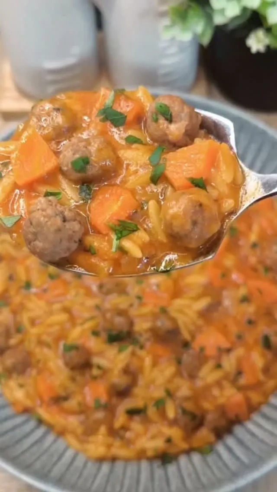

Nudel-Eintopf mit saftigen Hackfleischbällchen
Ein Topf voller Wärme, Geschmack und Wohlgefühl. Dieser cremige Risoni-Eintopf mit würziger Brühe und zarten Hackfleischbällchen ist echtes Soulfood für die ganze Familie.
- 16 Zutaten
- 6 Schritte
Zur Zubereitung Video ansehen ↗
Zutaten
- Für die Hackfleischbällchen
Zubereitung
- Hackfleisch mit Salz, Pfeffer, Paprikapulver und Mehl vermengen. Kleine Hackfleischbällchen formen.
- Etwas Öl in einem großen Topf erhitzen. Zwiebel, Karotte und Knoblauch fein würfeln und kurz anbraten.
- Tomatenmark hinzufügen und 1–2 Minuten anrösten.
- Mit der Rinderbrühe ablöschen. Risoni, Gewürze und die Hackfleischbällchen dazugeben.
- Alles bei mittlerer Hitze 20–25 Minuten köcheln lassen, bis die Risoni gar sind und die Hackfleischbällchen schön saftig bleiben.
- Mit Salz und Pfeffer abschmecken, mit frischer Petersilie bestreuen und servieren.